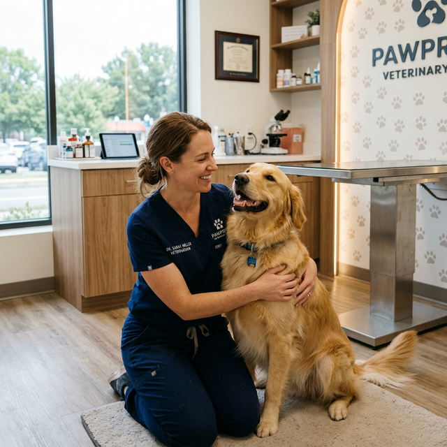
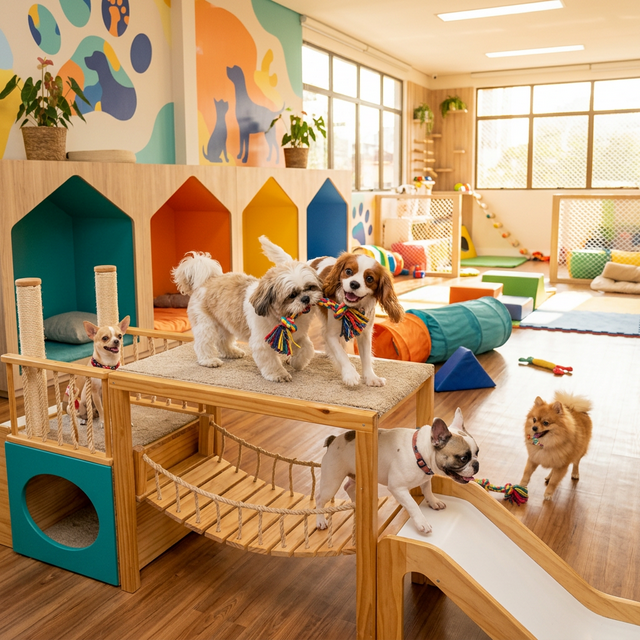
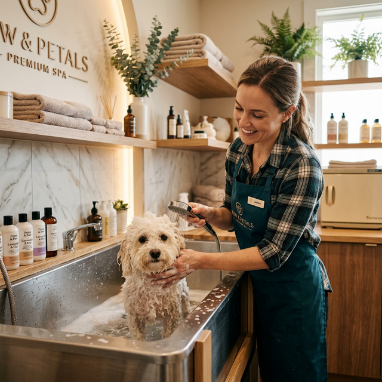

Clínica veterinária, creche e hospedagem pet de excelência no Setor Sul em Goiânia. Atendimento humanizado em um ambiente acolhedor.
Consultas veterinárias completas realizadas por profissionais experientes, com foco em diagnóstico preciso e amor pelo bem-estar do seu pet.
Agendar ConsultaServiços de estética animal de alto padrão, realizados com produtos premium, paciência máxima e sem estresse para o cão ou gato.
Agendar Banho e TosaUm espaço amplo, divertido e seguro. Onde seu cãozinho pode socializar, gastar energia e ter um dia incrivelmente feliz com novos amigos.
Conhecer a CrecheHotel aconchegante com acompanhamento integral. Oferecemos carinho e segurança para que seu pet se sinta em casa durante sua ausência.
Reservar HospedagemOferecemos diferentes modalidades de hospedagem com atendimento premium para garantir conforto total.
"Lugar limpo, agradável, atendente educada e excelentes médicas veterinárias que oferecem cuidado e amor aos nossos pets. Tendo 4 gatos, fico muito tranquila com atendimento que eles recebem na clínica."
"Minha experiência na Hopet sempre foi excelente! A clínica é muito bem organizada e transmite muita confiança. Um elogio especial para a veterinária Tabata, que é extremamente competente."
"Excelente!! Confio minha princesa aos cuidados deles de olhos fechados! Tudo muito eficiente e atencioso! Minha cachorrinha faz tudo lá e sempre volta feliz."
"Sempre levo meus bebês na Hopet e não poderia estar mais satisfeita. As meninas têm um olhar extremamente atencioso, cuidadoso e cheio de carinho com os pets e com os tutores."
"Minha gatinha é sempre muito bem tratada aqui. Sai do banho e tosa como uma princesa. A veterinária Tábata é sempre muito cuidadosa. Clínica de confiança e competência."
"O termômetro de um Pet é ver se o seu cachorro fica feliz quando chega lá. E o meu Golden fica ansioso e feliz. Excelentes profissionais!"


A excelência nos detalhes que você e seu melhor amigo precisam.